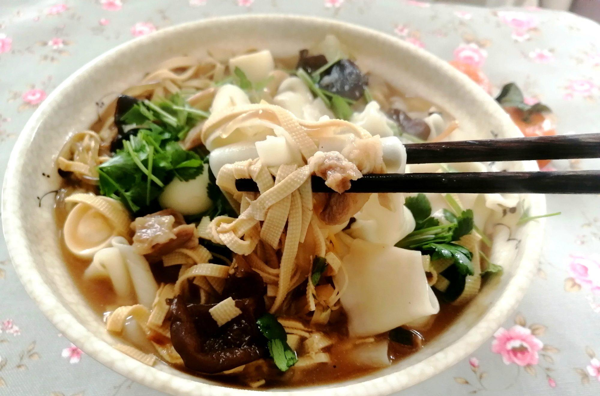
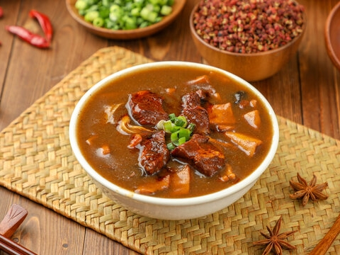
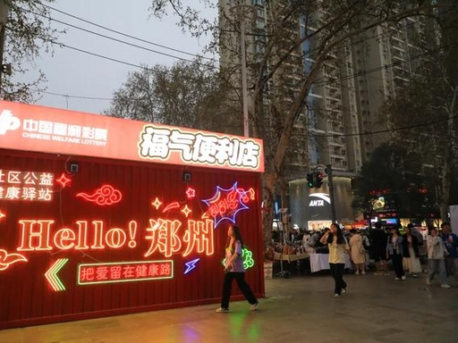
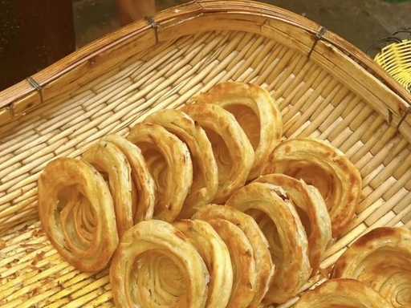

Zhengzhou’s food is honest, hearty, and steeped in wheat culture. From hand‑pulled noodles to spicy pepper soup, every dish tells a story of the land.

Unlike any other noodle, Huimian features wide, chewy ribbons in rich mutton or beef broth. It’s a humble bowl that warms the soul – a must-try in Zhengzhou.

Zhengzhou’s breakfast icon – a thick, peppery soup with tofu skin, vermicelli, and wood ear fungus. It’s a spicy, savory wake‑up call.

Erqi Square and Jianye Night Market buzz with skewers, fried goods, and local sweets.

From oil‑spiral pancakes (youxuan) to baked sweet potatoes and candied hawthorns, Zhengzhou’s alleys are treasure troves of affordable delights.
Henan food is less spicy than Sichuan, less oily than Hunan – it’s balanced, wheat‑forward, and deeply comforting. Meals here are about family, tradition, and seasonal ingredients.
Come with an empty stomach and leave with a full heart.
Click to uncover delicious secrets of Zhengzhou 🥟